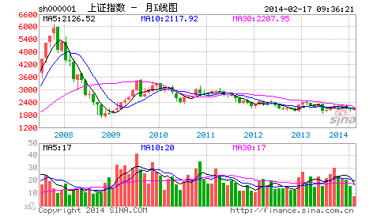

子曰：人无远虑，必有近忧。
杨伯峻：孔子说：一个人没有长远的考虑，一定会有眼前的忧患。
钱穆：先生说：一个人若不能有久远之虑，则必然有朝夕之忧。
李泽厚：孔子说：人没有长远的考虑，必然会有近在眼前的忧愁。
详解：字面上，这是很简单的一章；字面后，就不那么简单了。理解的关键在于：何谓远虑？何谓近忧？三位的解释都非透彻之论。以眼前、朝夕的忧患、忧愁为“近忧”，长久的考虑为“远虑”，实不知何谓“远虑”、“近忧”矣。
“远”，深远、深奥，同于“习相，远也”，和“习相”相关，脱离“习相”无所谓深远、深奥，不过幻想而已。“习相”，先要明其“相”，明其“相”必先明其“相”之位次，明其“相”之位次，必对其“相”的当下逻辑关系有一明确把握。而现实的存在，不离时空，现实逻辑关系也必构成相应的时空关系，对现实逻辑关系的把握，须从这现实的时空关系中切入。“虑”，审察、思虑、谋划。“虑”，不是哈姆雷特式的，而是审察、思虑、谋划的统一，三者缺一不可，而最终必须落在行动上，没有行动的“虑”也不过是幻想而已。上面的所有工夫，都构成“习”的一环，但仍不是“习”的全部。“习”的关键在于对现实逻辑关系把握后的改变，是转现实而不是被现实所转，只有这样，才勉强算得上“远虑”。就算是炒股票这么小的事情，也必须有其“远虑”，否则没有对市场的深刻把握，也必然导致其“忧”之“近”，这点，观察一下那些亏损累累的人的行为就清楚了，那都是些被市场所转的典型。
“近”，缠附，同于“性相，近也”；“忧”，忧患,祸患。“近忧”，缠附忧患、祸患，为何如此？因为“人无远虑”。忧患、祸患的种子是当下种下的，每一思想、行为，都在种下种子。而种子并不一定即刻萌芽，把“近忧”解释成眼前的忧愁、忧患，是对此不能明了。现实中，很多没有“远虑”的事情，所谓运气来了挡都挡不住，眼前一片大好，加速上涨，何来眼前的忧愁、忧患？如此，难道就没有“近忧”？这，显然是不对的。人的行为，必须从其苗头下手，不想吃恶果，最简单的方法就是不要种下其种子，忧患、祸患的种子一旦缠附，一有机会就会萌芽，就要结果。别以为可以用任何方法可以消除这种子，种子一旦种下就是无位次的，准确说，相对于现实系统来说，种子是无位次的，任何现实的把戏都消灭不了种子，种子不一定在眼前发芽，但不发芽只是机会不成熟，一旦成熟，逃都逃不掉，眼前看不到、没迹象的忧患、祸患，往往才是致命的。而这，才是真正的“近忧”。
无“远虑”与“近忧”之间的关系，孔子给了一个“必有”的强判断，由此可见对此的重视与强调。这话可不单单针对个体的人，家、国、天下，同样成立。“人不知”的社会，归根结底就是“人无远虑”的社会，其中的每个人、每个家庭、每个地区、每个团体、每个国家等，都处在“人无远虑”之中，由此种下无数“忧”的种子，忧患、祸患种子因而“近”而缠附。要使得“人不知”的社会成为“人不愠”的社会，首先要改变的就是这个“人无远虑”。站在对社会发展的认识上，马克思对社会发展的“人无远虑”进行了彻底的改变，马克思对资本主义社会的解剖，就是对现实社会当下之“相”的“远虑”，没有这“远虑”，就没有其“习”。马克思关于社会发展的五阶段理论，其基础就是对现实“人与人”、“人与社会”以及“人与自然”三重基础逻辑关系的完全分类，不明白这个，是不可能明白其“远虑”的。
一个能“远虑”的人、家、国、天下，必须有其相应的“远虑”能力，社会必须发展到一定位次，显示出一定位次之相，才可能有其相应的“远虑”。任何的“远虑”都是和一定位次的社会相连的，离开了一定位次的现实社会，“远虑”也无所谓“远虑”了。但社会的现实结构是有深浅之分的，有些“远虑”可以完全洞穿整个社会的深层结构，这样的“远虑”就构成了人类文明历史最珍贵的部分，孔子、马克思，都成为这最珍贵部分的中流砥柱。后人经常以孔子两千多年前说的话怎么可能对现在有用，现实已经改变了等等理由来搪塞，却不知道有些“远虑”是可以洞穿社会结构的深层，而社会结构的深层，在两千多年来，根本就没有任何的改变。因此，孔子的“远虑”，依然适合今天。马克思的，当然也一样。
缠中说禅白话直译
子曰：人无远虑，必有近忧。
孔子说：人没有深远的审察、思虑、谋划，必然缠附祸患。